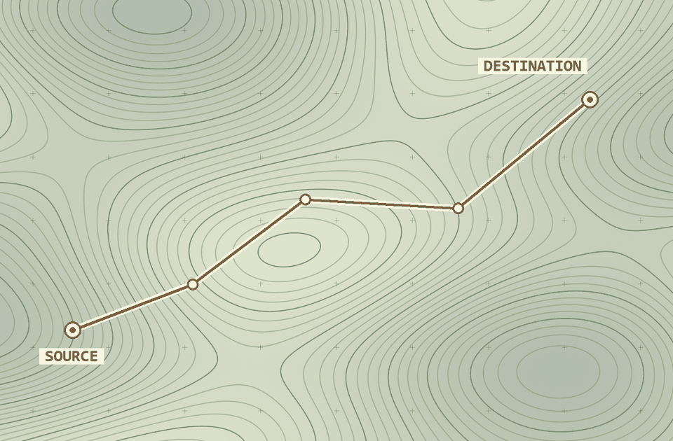

Personal notebook
Hello, I’m Xuan.
I’m learning how computers talk to each other. I follow packets, compare protocols and keep notes on what I can see in a network trace.
Read my field notes
Field notes
Questions from my networking practice
TransportWhat happens when a video frame goes missing?
In a video-streaming experiment, I compared TCP and UDP with the same clip. TCP delivered the missing bytes after a retransmission, which made some later frames wait. With one frame per UDP datagram, a lost datagram left a gap and the next frame could still arrive.
RoutingWhat does a hop tell me?
A hop is one step along a network path. A traceroute can reveal routers that reply as its probes travel farther. A silent hop leaves a gap in the output, even when the destination is reachable.
WebHow does this page reach a browser?
DNS provides an address for the site’s hostname. The browser then requests the HTML over HTTPS. The HTML points it to the stylesheet and route illustration, which it can fetch separately or reuse from its cache.